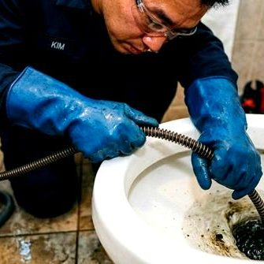
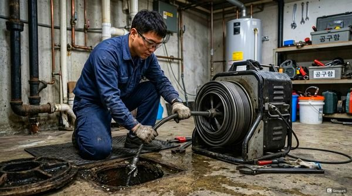
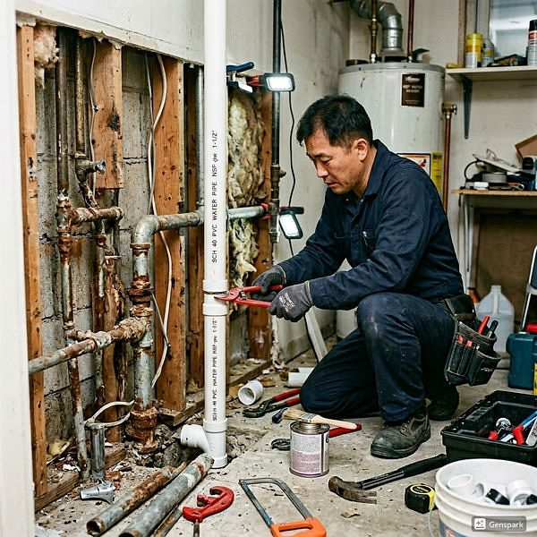

우수관과 오수관의 차이점 - 배관 기초 상식
2026년 4월 12일 | 제우스시설관리
건물의 배수 시스템은 크게 우수관(빗물 배관)과 오수관(생활하수 배관) 두 가지로 나뉩니다. 이 두 배관의 역할과 관리 방법은 다릅니다. 배관 문제 해결을 위해서는 기본적인 구분을 아는 것이 중요합니다.

우수관은 지붕이나 옥상에 내린 빗물을 모아 하수도로 배출하는 배관입니다. 건물 외벽을 따라 수직으로 설치되며, 낙엽이나 먼지가 쌓여 막히기 쉽습니다. 계절마다 청소가 필요하며, 특히 가을 낙엽 시즌 후에는 반드시 점검해야 합니다.
오수관은 주방, 화장실, 세탁실 등에서 발생하는 생활하수를 처리장으로 보내는 배관입니다. 기름때, 음식물, 비누, 머리카락 등 다양한 이물질이 유입되어 막힘이 자주 발생합니다. 드레인 기계와 고압세척기를 이용한 정기 세척이 필요합니다.

국내 하수도는 합류식(빗물+오수를 하나의 관으로)과 분류식(빗물과 오수를 별도 관으로) 두 방식이 혼재합니다. 오래된 지역은 합류식이 많아 폭우 시 하수 역류가 빈번합니다. 분류식 지역은 역류 위험이 상대적으로 적습니다.

배관 종류를 모르고 잘못 연결하면 환경오염과 과태료 부과 대상이 됩니다. 제우스시설관리는 관로탐지기로 배관 종류와 경로를 정확히 파악하고, 내시경 카메라로 내부 상태를 진단합니다. 28분 내 출동, 전화: 010-4406-1788